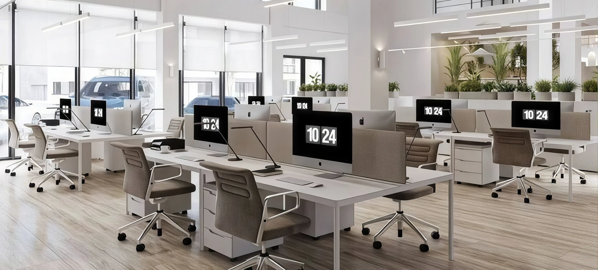
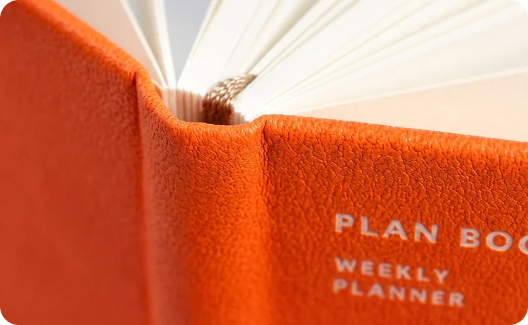
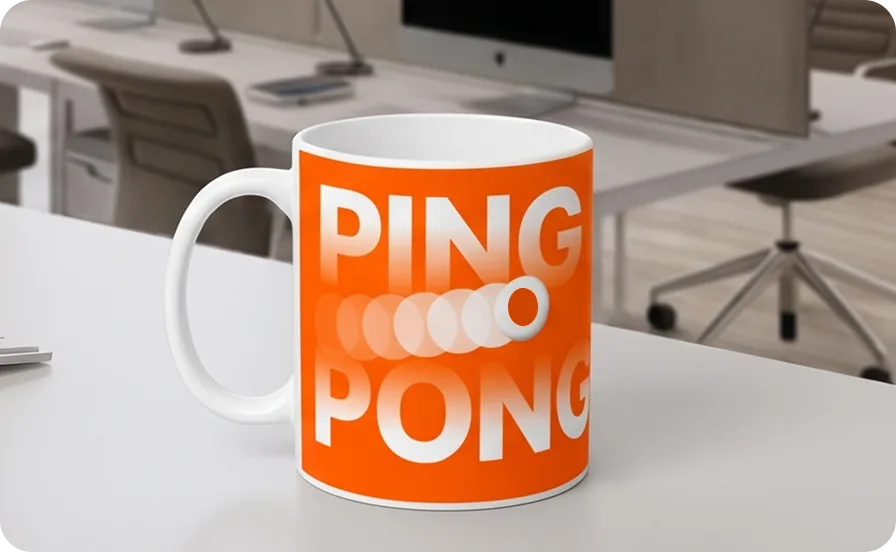
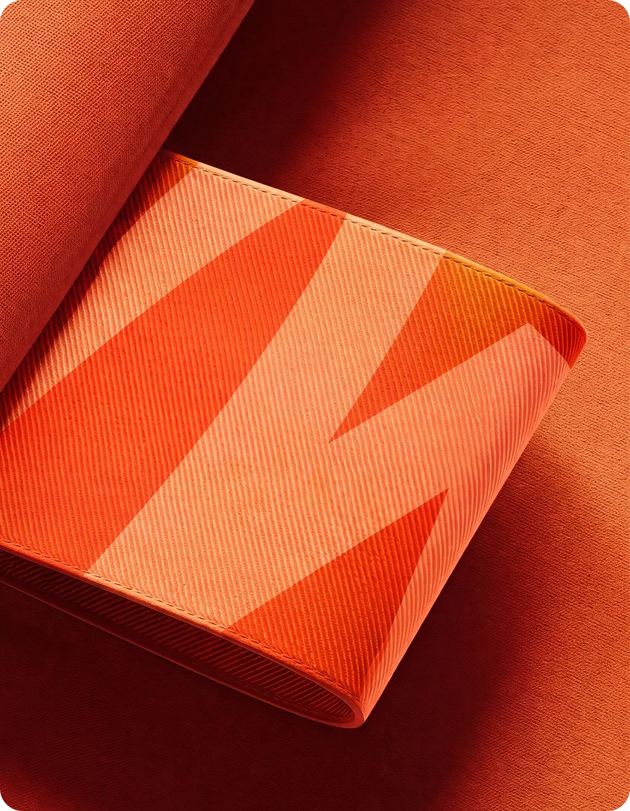
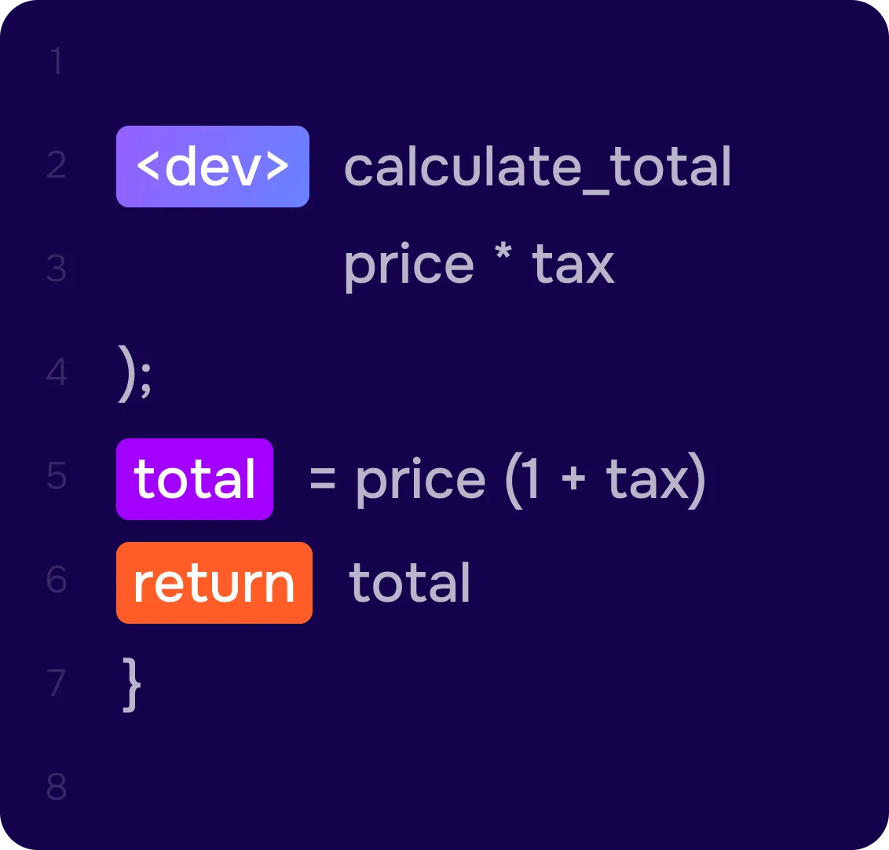
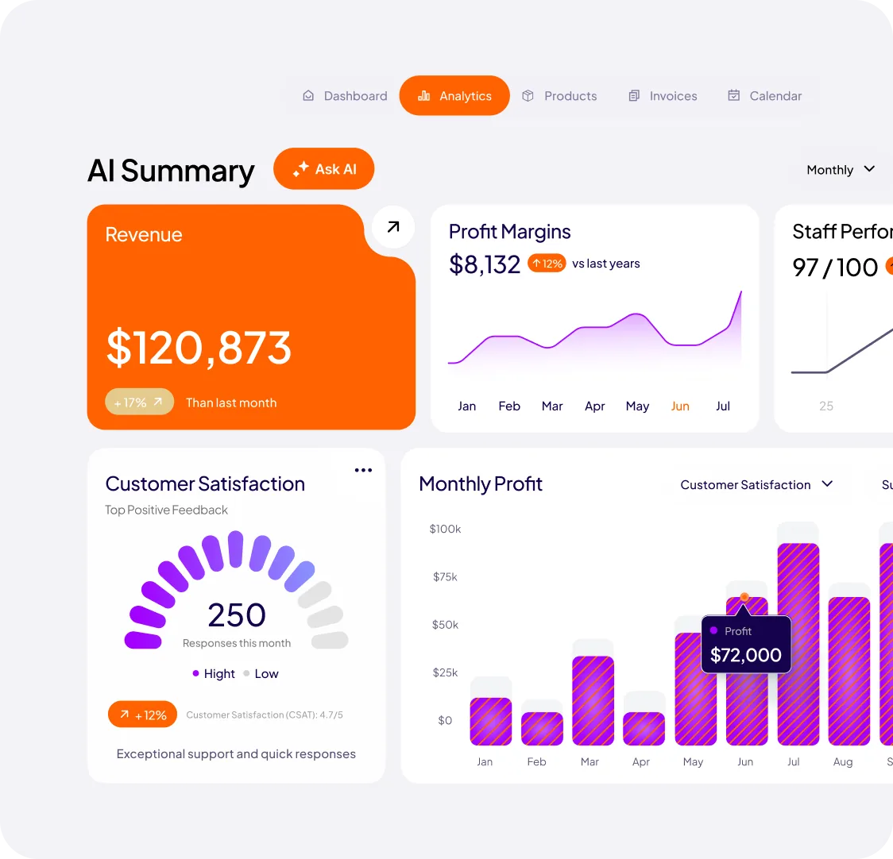
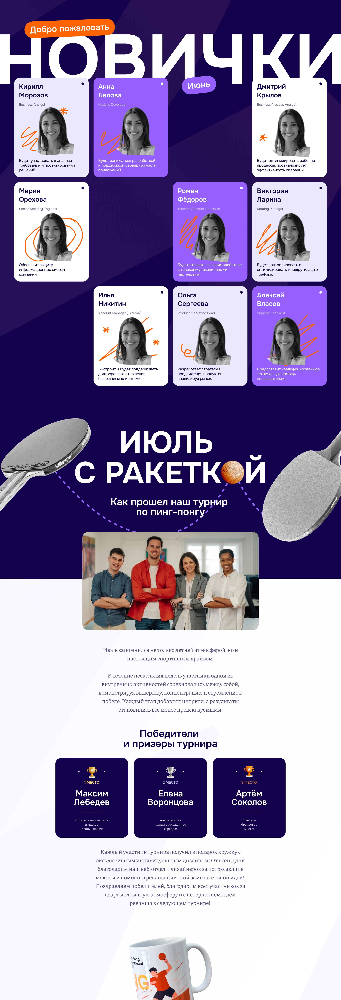

IT company
in cyprus
Brand identity development for an IT company, including visual style creation and consistency across all brand touchpoints.

Line — the visual foundation of the brand
Brand recognition is built around a custom-designed line with a 45° angle and geometric edges. The identity combines sharp and fluid forms with a distinctive orange and purple palette.



Social media concept
The task was to create the company’s SMM presence and branding from scratch for positioning in the media space.
The main goal was to create a universal template system for efficient collaboration with the marketing department.
Website Infographics
Bright infographics were created in the brand’s visual style, presenting key company information through a balance of clarity, functionality, and distinctive visual identity.


Digital Editorial Design
Created internal articles and digests using editorial-style layouts, combining structured typography and brand graphics into a cohesive visual experience.

Presentation
Unique templates for presentations and other office materials were also created for the company. A modern approach to presenting information and infographics was chosen.